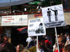
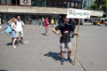

2005.05.29., vasárnap
tomcat
blog
droidzóna
levrov
Megvolt a tüntetés. Most valószínûleg én vagyok Magyarország legkisebb törpepolitikusa. Az még úgysem voltam. Olvassátok el, hogyan zajlott a mai tüntetés, és mi is az igazság arról, hogy Mortimer családja sátánista, fegyverimádó szekta lenne, mint ahogyan a TV2 Napló címû mûsorában ma elhangzott.
Az esemény hivatalosan délután kettõkor kezdõdött, mi persze már elõbb ott voltunk. Engem a Jobbik egyik tagja vitt ki a Moszkva térre kocsival, s velem a Magyar vagyok, nem rasszista feliratú polókat is. A Hatvannégy Vármegye hozta a hangcuccot, a Jobbik pedig a szónoki emelvényt.
Érkezés után röviddel jelentkeztem a biztosító rendõröknél, akik elmondták, hogy az elõzetes tervvel ellentétben mégsem veszik körül kordonnal a teret. Közben a Jobbikosok építgették a bútorzatot, és elkezdtek szállingózni az elsõ látogatók. Az elsõ riporter is megérkezett, egy barna bõrû ember, kezében kamerát tartva.
- Ó! Benne leszek a tévében! - mondtam a mellettem pakoló jobbikosoknak.
- Maga csak azért csinálja, mi? - kérdezte a kamerás megvetõen.
- Nem, nem azért.
- Dehogynem.
- Hadd tudjam már jobban...
- Mi a céljuk ezzel a tüntetéssel?
- A magyarellenes támadások és a cigánybûnözés takargatása ellen tüntetünk.
- Maga volt az, aki provokált a múltkori tüntetésen?
- Provokáltam? Mire gondol?
- Hát a táblájával.
- Úgy gondolja, a tábla felirata nem volt összhangban a tüntetés mondanivalójával?
- De maga szidta az emberek anyját!
- Én-e?
- Igen, maga!
- Dehogy szidtam.
- De igenis szidta!
- Kinek?
- A többieknek. Szidta az anyját.
- Nem emlékszem rá.
- Mit szólna, uram, ha bebizonyítanám? He? Maga szélsõjobboldali provokatõr!
- Mondja, maga most agitálni jött?
- Én? Én csak riportot készítek...
- Ilyen kérdésekkel?
Vállvonogatás.
- Maga melyik tévétõl van?
- Az MTV cigánymagazinjától.
- Maga a közszolgálati televíziót képviseli?
- Igen.
- És én ezt elhiggyem magának?
- Nem muszáj.
- Na, akkor most húzzon innen, de gyorsan.
A pasas szó nélkül leengedte a kamerát és odébb ment. Ideje volt, páran már elég csúnyán nézték. Kisvártatva látom ám, hogy egy tenyésztett náciállattal készít éppen interjút. A bonehead nem is erre a tüntetésre érkezett, hanem a Vér és Becsület várbeli demonstrációjára tartott, ami épp ugyanekkor zajlott. Odamentem.
- Elnézést, megnézhetném az újságíró-igazolványát?
- Nem.
- Pedig elkérném.
- Aztán milyen jogon?
- Én vagyok ennek a rendezvénynek a fõ szervezõje, és ellenõriznem kell, valóban az-e, akinek mondja magát.
- Hát pedig nem mutatom meg.
- Rendben, akkor hagyja el a demonstráció területét.
- Nem hagyom.
- Utoljára mondom, hagyja el a területet.
- Magának ehhez nincs joga.
- Akkor a rendõrökkel fogom elvezettetni.
- Hát csak tegye.
Odamentem a rendõrök parancsnokához, és vázoltam, mi a helyzet. Odament a kameráshoz, elkérte a sajtóigazolványát. Tényleg a Magyar Televíziótól érkezett.
- És mi a probléma? - kérdezte tõlem.
- Ez az úriember provokálja a tüntetés résztvevõit - mondtam - és felszólításra nem hajlandó távozni.
- Ho-ho, aztán mit provokáltam én? - fölényeskedett a pasas.
- Mi az, hogy mit? Hány tanút hozzak, hogy provokatívan viselkedett az imént?
- Hát, tõlem akárhányat!
- Nos, akkor lesz szíves kikapcsolni a kamerát, és amit itt felvett, nem engedélyezem, hogy adásba kerüljön. Sem az én, sem a rendezõtársaim nyilatkozatait, sem pedig a rólunk készült közelképeket. Minden felvételt letiltok.
- Ahhoz nincs joga.
- Már hogy a fenébe ne lenne! Nézzen már utána a sajtótörvényben. Tizenöt éve újságíró vagyok, tudom.
- Nahát, nahát, mennyi újságíró lett itt hirtelen!
- Lesz szíves tehát távozni.
- Miért, különben mi lesz?
- Mi az, hogy mi lesz?
- Mi lesz, megvertek, he?
- Nem. Mi nem vagyunk büdös cigányok. Mi betartjuk a törvényt.
A pasast két percen belül kirakták a térrõl a rendõrök, és közölték vele, hogy csak távoli képeket vehet fel, a tömegtõl tartsa magát távol.
- Sajnos nem lehet messzebbre elhajtani - szabadkozott az alezredes - a sajtó képviselõje.
- Tudom, azért köszönöm.
Mindez persze nem akadályozta meg a "riportert", hogy késõbb visszasunnyogjon a tömegbe. Nos, ennyit a "közszolgálati" televízió munkatársairól. Jött csinálni a fesztivált, hátha megüti valaki, hogy aztán elsírhassa a kisebbségi mûsorában. Hát, ezt elbaszta, sajnos nem voltunk ennyire rasszisták.
Míg ez a kellemetlen közjáték zajlott, már elég komoly tömeg kezdett összegyûlni. Hogy mennyien voltak, csak saccolni tudom, de nem tudom, volna-e értelme, ha egyszer minden újság és televízió más és más számot állított. A baloldali és liberális lapok szerint "nyolcvanan-százan se voltak kíváncsiak az uszító beszédekre", illetve "több újságíró volt, mint tüntetõ", a jobboldali lapok szerint pedig 300-400 ember volt ott, akik "békésen tüntettek a magyargyûlölet ellen." A Kossuth rádió szerint száz-kétszázan voltak. A fényképeken mindenesetre látszik, hogy a tömeg nagyjából akkora, mint a cigányok tüntetésén. Róluk ötszázat írtak, hát akkor maradjunk mi is ennyiben, bár szerintem ennek legfeljebb a fele igaz mindkét esetben, tehát a rádiósok becslése a helyes. Érdekes módon nem voltak jelen a jobboldali megmozdulásokon megszokott turbómagyar pofák, Szabó Albert egykori emberei, meg a zsidózó öregurak.
Amikor visszamentem az emelvényhez, a jobbikosok már felhúztak egy szalagkordont, beüzemelték a hangcuccot, és az elmaradhatatlan akciónyugdíjas-kommandó is megjelent a szokásos, gyöngybetûkkel írt tábláikkal. A tömegben egy-két magyar zászló és egy "Tégy a magyargyûlölet ellen" feliratú tábla emelkedett. Mindenféle emberek érkeztek: idõsek, fiatalok, gimnazisták és dolgozók, fiúk-lányok vegyesen, egy székesfehérvári katonatársam is felbukkant. Boneheadeket nem láttam, bár kérdés, bonehead-e valaki már attól, hogy kopasz a feje. Ilyenbõl volt egy-kettõ, bár a klasszikus bakancsos, fehér cipõfûzõs fajtát nemigen láttam. Két csávót elhajtottunk, mert Szálasi képével ékített pólóban feszítettek. Kicsit hõzöngtek, aztán elhúztak a vérbe. Lehet, hogy a becsületbe is, de ez nem biztos. Közben mindenhol fényképezõgépek csattogtak, kamerák bámultak üvegszemekkel és idõnként az orrom alá dugtak egy-egy mikrofont. A hangcuccba közben betoltam a lengyel Aural Planet goaremix albumát, hadd tátsa a száját a sok hülye, hogy a mélymagyarok nem csak trianonos dzsidzsimetált hallgatnak.
Két óra után valamivel Molnár Balázs, a kettosallampolgarsag.hu szerkesztõje lépett az emelvényre, köszöntve a megjelenteket. Figyelmeztetett mindenkit, hogy ne nyilatkozzanak az SZDSZ Klubnak és a Néphazugságnak, majd felkonferálta elsõ megszólalónkat, Molnár Tamást, a Jobbik alelnökét. Az egykori illegális ellenzéki szép beszédet kerekített a magyarellenes mentalitásról, a hisztériáról, ami manapság uralja az országot. Ki lett osztva Gyurcsány, Kunos, meg mindenki, akire egy magyarérzelmû (értsd: mélymagyar, bár nem tudom, mi lenne, ha valaki azt mondaná, hogy mélycigány) ember. Õt Toroczkay László, a HVIM elnöke követte, emlékeztetve a tüntetõket, hogy már nem csak a Vajdaságban félniük kell a magyaroknak, hanem Magyarországon is késelnek a cigányok azért, ha valakinek magyar címer van a táskáján, vagy ha Nagy-Magyarországot ábrázoló pólót visel. A rövid ad lib beszéd után ismét Molnár Balázs lépett az emelvényre, felkonferált engem, és hirtelen több száz arc meredt rám, elõttem egy rakás mikrofon, a kezemben pedig a tegnap este írott beszédem... Lámpalázamban le is vertem a Duna TV mikrofonját. Balfasz náci.
A beszéd szövegét a blog végén elolvashatjátok. A közönség soraiban nagy sikert aratott; rasszista kiszólások nem voltak benne, bármennyire szerették volna a balliberális sajtó képviselõi. Igaz, az Index riportere, Bohus Péter késõbb még ahhoz is vette a pofát, hogy el sem hangzott mondatokat idézzen tõlem. Az imént írtam nekik, hogy ezt jó lenne helyesbíteni, mielõtt hozzájuk vágom a törvénykönyvet. Mindössze annyit tettek, hogy a mondatról levették az idézõjeleket. Érdekes kérdés, miért vannak a sajtó egyes képviselõi olyannyira meggyõzõdve a rasszizmus veszélyérõl, hogy akár csinálnak is ilyen veszélyt, ha már egyszer nem találják. A pszichiátria tudománya biztosan ismer szakkifejezést arra, amikor valaki betegesen nem képes elfogadni a valóságot és alternatív emlékek közt él.
Fellépésem elõtt odajött hozzám egy tizenéves srác, megmutatott a testén két jókora heget, amit az okozott, hogy egy cigány úgy hátába szúrt egy kést, hogy elöl jött ki. Kész szerencse, hogy túlélte. Beszédem közepén felhívtam õt is, mutassa meg, és mondja el, mit kapott ezért a cigány. Szabadlábon védekezhetett, és csak felfüggesztett büntetést kapott. A beszéd végén egy mûanyag tálba pénzt gyûjtöttünk Tamás Gáspár Miklósnak vonatjegyre, hogy visszautazhasson Romániába, ha már egyszer nem akar ilyen fajgyûlölõ országban élni.
Természetesen az "ellenoldal" is képviseltette magát, mármint azok, akik meg voltak róla gyõzõdve, hogy ez itt egy rasszista tüntetés. Két emberke beállt a tömegbe egy-egy táblával, az egyiken "Szeretem, mert magyar!" felirat volt olvasható, de csak közelrõl volt kivehetõ, hogy a felirat mellett egy cigánygyerek képe látható. Barátja tábláján "A fajgyûlölet káros az egészségre!" felirat díszelgett, amivel egyébként egyetértek, mert mi is a rasszizmus ellen tüntettünk - az ugyanis nem csakis azt jelentheti, hogy a többség bántja a kisebbséget. Meglehetõsen hergya ellenakció volt, legtöbbünknek fel sem tûnt, hogy nem velünk vannak, és a tudósításokban sem mutatták õket. A Magyar Rádió tudósítója egyenesen azt hitte, õk is velünk vannak. A Jobbik három szervezõje azért köréjük állt, nehogy valami bajuk essék. Mi nem vagyunk tetves cigányok, akik leszúrják, akinek ellenvéleménye van - netán nem érti a tüntetés célját - de azért jobb vigyázni, egy balegyenes bizony a turbómagyaroknál is elõállhat. Nem állt.
Este figyeltük a médiavisszhangot. Pontosan az lett, amit vártunk. Az RTL Klub és a közszolgálati televízió - legalábbis az MTV2 - mélyen hallgatott az eseményrõl. Nyilván nem találtak semmit, amibe beleköthetnének, maradtak tehát a jól bevált "amirõl nem beszélünk, az nincs" elgondolásnál. A TV2 beszámolt ugyan a tüntetésrõl, de Sváby András azt állította, nyíltan rasszista megmozdulás volt, amelyen a romákat "letetvesezték." Már megy nekik a helyreigazítási felszólítás. Érdekes módon ezek után a képes riportban éppenséggel nem a "rasszista" felhangokat hangsúlyozták, hanem például azt mutatták, amikor a megszúrt srácot felhívom az emelvényre. A mûsor mögött egy ostoba közvélemény-kutatás folyt, azt kérdezték a nézõktõl, be kell-e tiltani a nyíltan rasszista tüntetéseket. Kezit csókolom, azok már be vannak tiltva. A rendõrség minden tüntetés bejelentését mérlegeli, és nem ad engedélyt olyan megmozdulásokra, melyek törvénysértõ célokért szervezõdnek. Mi több, ha a szervezõk eltérnek a bejelentett programtól, napirendtõl, azonnal fel is oszlatják a tüntetést. Idézek a minden tüntetésszervezõnek kiadott rendõrségi tájékoztatóból:
A gyülekezési jog gyakorlása nem valósíthat meg bûncselekményt, bûncselekmény elkövetésére való felhívást, valamint nem járhat mások jogainak és szabadságának sérelmével.
Mármost én elhiszem, hogy egyes vadliberális barmok szerint már az is jogsértés, ha kimondjuk a cigány szót, de a törvény szerint ez nem így van. Tessék nyugodtan elhinni, a rendõrség még mindig pártatlan szakmai szervezetként mûködik, és nem verõlegények, akik azonnal ugranak letartóztatni azt, aki valamilyen okból nem felel meg valakinek. Nem azért engedélyezték a tüntetést, mert olyan fene nagy rasszisták, hanem azért, mert bizony a demokráciában a szólásszabadság az esetleg szélsõségesnek tartott mondanivalóra is vonatkozik. Még Bácsfi Diána is tüntethet, bizony. És adott esetben megvédik a hatalmas lila mûfaszoktól.
No de félre a jogtudorkodást. Nézzük tovább a sajtóvisszhangot.
A Hír TV és a Duna TV - a két jobboldali televízió - korrekt, rövid riportot készített a tüntetésrõl. Ezúton is köszönöm nekik a pártatlan és objektív tájékoztatást! A Magyar Nemzet is tõlük vette át az anyagot, amikor röviden ennyit írt:
Több százan tüntettek a magyargyûlölet ellen
2005. május 29. 18:48
MNO
Több százan tüntettek a magyargyûlölet ellen a Moszkva téren. A demonstrációt, amelyhez a Jobbik és a Hatvannégy Vármegye Ifjúsági Mozgalom is csatlakozott, a kettõs állampolgárság.hu honlap szerkesztõi azzal a fiatalemberrel közösen szervezték, akit két héte megvertek az antirasszista tüntetésen.
A szónokok visszautasították, hogy rasszistának és fasisztának kiáltsák ki a leszúrt cigány fiú miatt a magyarokat. Több ellentüntetõ is megjelent, transzparensekkel, szórólapokkal, de verekedés nem volt – közölte a hirtv.hu.
A Magyar Rádió Esti Krónika címû mûsora is rövid helyszíni tudósítással jelentkezett, melyben összevágták beszédem legfontosabb mondatait. Ez is egy nagyon korrekt, tárgyszerû tudósítás.
Az Esti Krónika tudósítása, MP3, 1.6 MB
A TV2 tudósítására azonban térjünk vissza egy percre. A Napló mûsorában érdekes állítás hangzott ma el, sõt, érdekesebb, mint az egész tüntetés. Neve és arca kitakarásával megjelent valaki, aki azt állította, hogy Mortimer családja egy õrült szekta, akik gyermeküket már születésétõl harcosnak nevelték, mindig fegyvereket vásároltak neki, és videójátékokat, hogy azokból tanulja a fogásokat. Õ is tagja volt a szektának, de annyira terrorizálták, hogy elmenekült. Állítása szerint Mortimert szülei "Isten elsõ harcosának" tekintik, a szekta feje az apa, az anya pedig szeánszokat tart a házban.
Mármost eleve elég érdekes, hogy csak úgy leközöljenek egy ilyen súlyos állítást anélkül, hogy bárkit is megkérdeznének, mit szól hozzá, nota bene, magukat az érintetteket sem. Én persze megkérdeztem, de nem csak õket, hanem néhány független embert is, törökbálinti olvasóimat, akik szegrõl-végrõl ismerik a családot. Mindannyian alátámasztották azt, amit Mortimer édesapja mondott nekem a telefonban. A szektavád természetesen baromság. A kitakart arccal hazudozó alak Mortimer volt barátnõje. Jó ideje ez a szektadolog a rögeszméje, amióta Mortimer szakított vele, mindenhol kardos harcosokat vél látni, és mellesleg két évet zártosztályon is töltött emiatt. Egy elmebeteg nyilatkozgatott tehát a TV2-nek. Ezúton is gratulálok Sváby Andrásnak, a pártatlan és objektív tudósítás újfajta értelmezéséért!
A Népszabadság ezúttal nem hazudott túl sokat, mindössze úgy próbálta beállítani a tüntetést, mintha egyetlenegy ember ácsorgott volna a Moszkva téren. Odajöttek fél egykor, amikor még nem volt senki, lefotózták az egyelõre üres tér közepén álló egyik HVIM-aktivistát, amint egy táblát tart, majd aláírták, hogy ez volt két órakor. Azért rasszistáztak is egy kicsit, meg kiragadoztak félmondatokat a beszédbõl, de meglepõ módon azt is említették, hogy szóltam az igazságtalan általánosítás ellen. Igaz, bár mindjárt ki is csavarták néhány szavamat, nehogy már azt higgyék, komolyan gondolom.
No, hát ez minden, amit a mai tüntetésrõl el tudok mondani. Következzenek inkább a fényképek, aztán a beszédem teljes szövege. Mindenki döntse el, rasszista-e vagy sem. Korlátolt faszparasztok persze úgyis csak az elsõ két sort olvassák, aztán kikelnek magukból, kultúremberek nyugodtan olvassák el a végéig. A fényképekért köszönet G. Bencének.
Mindjárt a közepén kezdünk. A tömeg már összegyûlt, áll az emelvény, szól a hangcucc.
A Hír TV és a Duna TV mikrofonjainak felszerelése
Továbbá hass, alkoss, gyarapíts...
Molnár Balázs felkonferál
Molnár Tamás
Ez lenne az Index szerint "nyolcvan" ember.
Ifjú mélymagyar
Az aljas média
Szomorú mélymagyarok...

... és portékájuk. Fúj, csupa náci fétis! Különösen az az Árpád-sávos, szentkoronás címer undorító.
A Fakabát Rt. jármûkiállítása
Nyolcvan ember?
A nyolcvan ember lassan már a metrókijáratig ér...
A nem túl feltûnõ ellentüntetõk
Háttérben az akciónyugdíjas-kommandó
Várok a soromra
Német juhász. Avagy náci pásztor.
Itt látható a pofátlan kisebbségi riporter
Egyre nyolcvanabban leszünk
Namármost... hagyjuk.

Fasiszták
Fajgyûlölõk
Rasszisták
Neonácik
Újnyilasok
Tábla
Magyaros azték csomójelek

Szeresd a cigánygyermeket, mint tenmagadat...

Aha! Ott egy leborotvált fej. NÁCIK! NÁCIK!!
Na, ennek a csávónak viszont kurvára nem örültem. Sajnos nem vettük észre a tömegben, egyébként szóltunk volna neki, hogy ezzel a jelképpel húzzon a retekbe.
Mélymagyar póló
Már a metróállomás galériáján is álltak
Az akciónyugdíjas-kommandó egy másik táblája
További fasiszták
Toroczkay László rejtõzködve uszít a magyarellenesség ellen
Lebuktatjuk. Szóval ez az a szemétláda, akinek baja van a vajdasági magyarverésekkel! Látszik is, hogy a haját csak falból növesztette meg a tüntetésre, egyébként biztosan kopasz!
A HVIM-vezérkar
És következtem én... Az ott, kérem szépen, német ejtõernyõs bakancs. Borzasztó. És el is vagyok hízva.
"... és követelem, hogy a McDonald's-t bontsák le!"
Bakker, mennyi fasiszta!
Lehet, hogy ezt a képet majd 2030 körül viszontláthatjátok egy képes albumban, amely a rendszerváltásról szól. Mit röhögtök? Orbán Viktor is így kezdte.
Magyar nemzeti krikszkrakszot!
"Híveim..."
A beszéd végeztével sokan odajöttek, hogy kézszorításukkal fejezzék ki azonosulásukat az elborzasztó, kirekesztõ eszmékkel. Mármint hogy rekesszük ki a bûnözõket. Merthogy errõl beszéltem.

A tüntetésen a Népszabadság fotósa szerint mindössze egy ember volt
A tüntetés végén a tömeg eloszlott, felpakoltuk a cuccokat, és lassan elszállingóztunk. Távoztomban az akciónyugdíjas-kommandó egy katonája utánam kiáltott:
- Viszontlátásra! Aztán vigyázzon magára!
- Vigyázok. Csókolom!
- Mi is vigyázunk majd! Megvédjük!
- Tényleg?
- Igen! És... és lövünk!!
- Lõnek.
- Hát... ha adnak puskát.
- Aha. Hát, köszönöm...
Ezzel távoztunk a Moszkva térrõl, és próbáltunk Loydival nem megfulladni a röhögéstõl.
Beszédem teljes szövege
Reggel nézzétek a Mokkát, lassan már én vezetem Havas Henrik helyett.